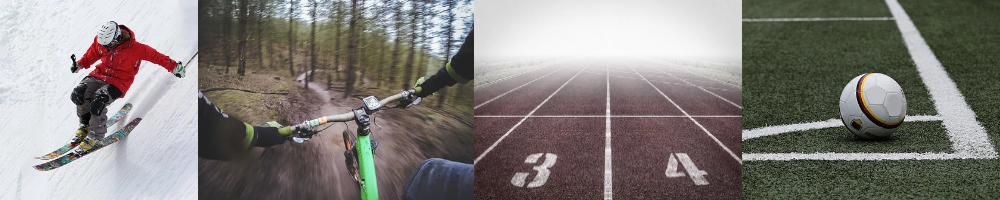

1F - rozszerzone treści nauczania z geografii, biologii i języka angielskiego

Powinieneś wybrać klasę sportową, jeśli:
- odnosisz znaczące sukcesy w różnych dziedzinach sportu (koszykówka, siatkówka);
- marzysz o rozwijaniu swoich umiejętności sportowych pod okiem doświadczonych
trenerów;
- przeszedłeś pozytywnie testy sprawnościowe;
- marzysz o podjęciu studiów na Akademii Wychowania Fizycznego, Wyższej Szkole Kultury
Fizycznej i Turystyki w Pruszkowie, Wyższej Szkole Rehabilitacji w Warszawie, Wyższej
Szkole Sportowej w Łodzi, Wyższej Szkole Turystyki i Hotelarstwa, Wyższej Szkole–
Edukacja w Sporcie w Bielsku-Białej.
- w przyszłości chcesz przystąpić do egzaminu maturalnego z geografii, biologii, języka
angielskiego na poziomie rozszerzonym.
Nabór odbywa się poza systemem elektronicznym.
1F -plan nauczania
| Rok/Klasa | 1 | 2 | 3 | 4
|
| j.polski | 4 | 4 | 4 | 4
|
| j.angielski | 3 | 3 | 3 | 3
|
| j.niemiecki | 2(1j) | 2(1j) | 2(1j) | 2(1j)
|
| j.francuski | 2(1j) | 2(1j) | 2(1j) | 2(1j)
|
| matematyka | 3 | 4 | 3 | 4
|
| wf | 3 | 3 | 3 | 3
|
| godz.wych | 1 | 1 | 1 | 1
|
| biologia | 1 | 2 | 1 |
|
| chemia | 1 | 2 | 1 |
|
| geografia | 1 | 2 | 1 |
|
| historia | 2 | 2 | 2 | 2
|
| wos | 1 | 1 | |
|
| fizyka | 1 | 1 | 2 |
|
| przedsięb. | | 1 | 1 |
|
| plastyka | 1 | | |
|
| informatyka | 1 | 1 | 1 |
|
| e_dla_bezp | 1 | | |
|
| religia | 2 | 2 | 2 | 2
|
| wych.rodz. | 14r | 14r | 14r |
|
| doradz. zaw. | 2r | 2r | 3r | 3r
|
| r_angielski | 1 | 2 | 2 | 3;1dyr
|
| s_zaj.sport. | 13 | 13 | 13 | 13
|
| r_biologia | 1 | 2 | 2 | 3;1dyr
|
| r_geografia | 2 | 1 | 3 | 3;1dyr
|